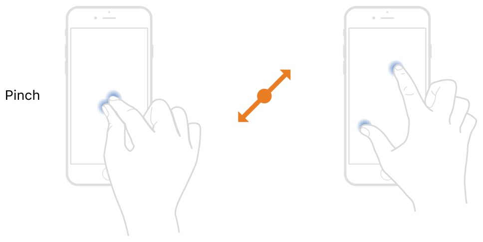

Designing for Mobile, Not as Scary as it Sounds - Book Club: Don't Make me Think - Chapter 10
Andrew Nolan
4/23/2023
Smartphones have been part of our lives for over a decade now. There are people old enough to drive in the US this year who were born into and don't know a world without smartphones.
In 2007, Apple revolutionized the world with the iPhone. You can debate which smartphones are best and most impactful, but it's undeniable that the iPhone helped kickstart the mobile web browsing revolution.

Prior to smartphones, the mobile web existed but it was slow and clunky. I remember having fun on the web of my dad's Blackberry. But what early phones offered did not compare to what the early iPhones gave us.
Back in the day, web designers focused on crafting strong desktop sites and mobile came as an afterthought if it was a thought at all. Heck, even designing responsive/scalable apps for different sized desktop monitors was not always considered. However, the easy zooming and scrolling that came with touch screen smartphones changed that. The web, even without new designs, suddenly became much more usable on a tiny screen.
These accessibility features, coupled with internet connections constantly available to our new pocket computers, web browsing on them quickly took off.
When this chapter was added to the Don't Make me Think in 2014, the mobile web was the wild west. Luckily Krug acknowledges this fact. Although some ideas in the chapter feel dated, the main theme remains true, you should design mobile sites with the same thought and care you would design for the desktop.
Tradeoffs
With the split between mobile and desktop web browsing, the main challenge becomes how to design for one without compromising the other. Tradeoffs become a big deal.
One popular approach for handling this dilemma is to use mobile first design. Essentially, we design the website first for a mobile device and then scale that into the desktop website.
Back when this book was written it looked a little different than today. The mobile site often had reduced features and just contained what the designers considered must have capabilities, while the desktop site was fully fleshed out.
Generally, this is not a best practice and doesn't happen as much today. Modern web frameworks make it easy to make scalable websites for both mobile and desktop. No need to maintain separate code repos or paths. Plus, smartphones are fast enough to handle the full web now.
If you are required to make the mobile version different, at least give an option to switch over to the desktop view for users that want to. Mobile users want the same rights as those on the desktop.
The Tyranny of Itty-Bitty Living Spaces
I think it's important to emphasize again the size of mobile devices during design.
If you go back to chapter 7 and look at all of the things you are encouraged to include on your home page or even the navigation elements of chapter 6, you'll see that it's very hard to fit all of this into a small device.
Tradeoffs, as we mentioned, have become very important in this context. There will likely be more levels and menus needed to display everything you want to show. It is important to pick what is most important to show immediately on your pages. That means more clicks for the user. Luckily, if we remember what we learned in chapter 4, we can make these clicks unambiguous and the user will not care.
Managing screen real estate should not come at the cost of usability. This is especially true with interactive elements like links and buttons. There are no cursors turning into hands or hover styles on mobile. You need to make sure everything is crystal clear.
Attributes of Well Designed Mobile Apps
Going back to Krug's law of usability "A person of average (or even below average) ability and experience can figure out how to use the thing to accomplish something without it being more trouble than it's worth." Krug says there are three key attributes here: learnable, effective, and efficient. If your app can be described as those, it is probably well made.
However, those attributes are for all websites. Mobile does have a few additional special cases.
It should be memorable. People do not spend much time on websites, and the mobile world makes things even faster. Memorable is kind of another step beyond learnable. Mobile apps often give a quick tutorial when first launched and then never show any help again. If you return after a while and cannot remember how it works, that's a problem.
Luckily, learnability is another key attribute of all designs, so if you can make your app easy to learn it will also be easy to relearn if people do forget.
Another design attribute Krug brings up is delightful. If your app is delightful it is a good thing. This one is not as much about usability, and it's not really mobile specific either. But if you can find something people need to accomplish and do it in a creative way, that will bring delight and cause people to use your app.
Just don't forget about usability in the process.
Conclusion
At the end of the day, mobile is here and it is here to stay. New technologies are coming every day and it's important to adapt and use them. While there may be tradeoffs and considerations you need to accommodate in your designs, it's important to remember good design principles remain consistent throughout and a new technology is not an excuse to forget about usability.
Enjoyed this article? Subscribe to the RSS Feed!